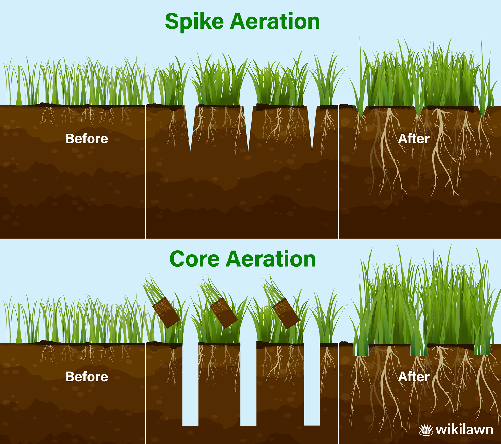

Carroll Lawn Aeration is a family-run business that has been serving the community since 2016. We are passionate about providing quality lawn care services and are committed to helping our customers achieve the beautiful, healthy lawns they desire.
Resume:
- Education
- Bachelor of Science in Accounting (in progress)
- Falcon High School — 2022
- Pikes Peak School of Expeditionary Learning — 2015
- Work Experience
-
Owner — Carroll Lawn Aeration
- 850+ clients per year
- Door-to-Door Sales Representative — Fox Pest Control
- Missionary — The Church of Jesus Christ of Latter-day Saints
- Skills
- Tableau
- Leading Groups of People
- Web Development
- VBA Excel Automation
- SQL
Tableau:
Use this Tableau chart to look at how people in Colorado take care of themselves! Now lets take care of our grass!

Why We Use Core Aeration:
We use core aeration instead of spike aeration because core aeration removes small plugs of soil from your lawn, allowing air, water, and nutrients to reach the roots more effectively. This method is much more beneficial for your grass than spike aeration, which can actually compact the soil further. Core aeration helps your lawn grow stronger and healthier.
